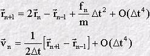
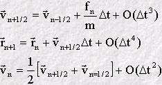
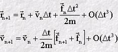
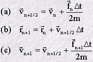

Integration Algorithms
Integration Algorithms
The molecular dynamics method solves Newton's equations of motion for atoms by taking a small step in time and using approximate numerical methods to predict the new atom positions and velocities at the end of the step. At the new positions, the atomic forces are re-calculated and another step in time is made. This procedure is repeated many thousands of times in a typical simulation.
The approximate numerical method used to advance the system by one time step is known as an integration algorithm. Many integration algorithms have been devised to satisfy the fundamental requirements of:
- Accuracy - does it give an accurate description of the atomic motion?
- Stability - does it conserve the system energy and temperature?
- Simplicity - is it easy to write a computer program for it?
- Speed - does it calculate the atomic motion as quickly as possible?
- Economy - does it use a minimum of computing resources e.g. memory.
The most popular group of integration algorithms among molecular dynamics programmers are the Verlet algorithms, which possess all the above advantages. There are three forms, which differ slightly in their usefulness, but are of equivalent accuracy and stability:
The molecular dynamics program Democritus is based on the velocity Verlet algorithm.
 The Basic Verlet Algorithm
The Basic Verlet Algorithm
The Verlet algorithm is one of the simplest of all integration algorithms, and was devised by L. Verlet in the early days of molecular simulation. It's simplicity and robustness made it the most popular algorithm for many years, though it is now superseded by its derivatives.
The equations of the algorithm are as follows.

What do these equations mean? Well, assume we are at some point in the middle of a simulation - at a time step numbered n. At the start of this time step, we will know the positions of the atoms rn, and their corresponding positions at the previous time step rn-1. The first thing we must do is calculate the forces (fn) acting on the atoms. We can then combine this information into the first equation, together with a suitable choice of time interval (Δt), and calculate the atom positions at the n+1th time step. (This equation is accurate to an order given by the fourth power of the time interval - which is indicated by the final term on the right of this equation.) Once we know the positions rn+1 we can calculate the velocity (vn) of each atom at time step n using the second equation, which is accurate to the second power of the time interval. When this is done we are ready to begin the next time step. Providing the time interval (Δt) is small enough, this procedure is good enough to reveal all the interesting properties of the system!
Despite the simplicity of this algorithm, some aspects are unsatisfactory. Most obviously, the atom positions are given for the n+1th time step, while the velocities are given for the time step n, i.e. one time step behind. Also, it is apparent that we must store atom positions for three consecutive time steps if we wish to calculate the velocities as well. It is possible to derive variants of the Verlet algorithm which are free from these minor inconveniences.
The Verlet Leapfrog Algorithm
The Verlet leapfrog algorithm is an economical version of the basic algorithm, in that it needs to store only one set of positions and one set of velocities for the atoms, and is even simpler to program.
The equations defining this algorithm are as follows:

The algorithm defines velocities that are half a time step behind, or in front of, the current time step n. When the forces fn of the current time step have been calculated, they are used in the first equation to advance the velocities from the half step behind n to the half step ahead. (In so doing the velocities can be seen to "leapfrog" over the current time step n, which is the origin of the algorithm's name.) When the atom velocities have been advanced, the positions can be updated using the second equation.
Throughout the computation of the atomic motion, the algorithm works with the half-step velocities. If the full-step velocities are required, the third equation may be used to obtain them. It is often adequate to work with the half-step velocities however.
The Velocity Verlet Algorithm
The velocity Verlet algorithm provides both the atomic positions and velocities at the same instant of time, and for this reason may be regarded as the most complete form of Verlet algorithm. The basic equations are as follows:

In practice these two equations are split further into three:

In this form the first equation (a) calculates a half-step velocity, using the force and velocity from time step n. This is sufficient to permit calculation of the atom positions at time step n+1, using equation (b). Finally, using the forces calculated from the new atomic position rn+1, the half-step velocity is updated to the full step velocity vn+1 (c). The advantage of this form of the velocity Verlet algorithm is that it requires less computer memory, because only one set of positions, forces and velocities need to be carried at any one time. This convenience is not apparent in the original equations.